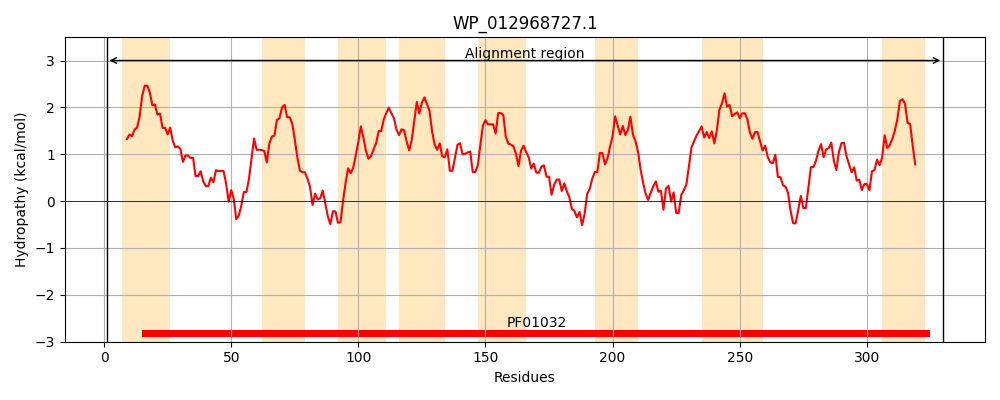
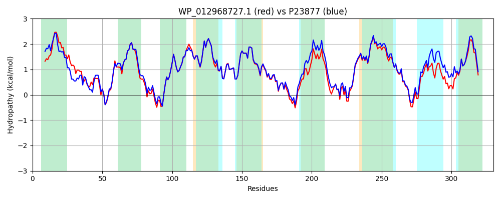

Hit Accession: P23877
Hit TCID: 3.A.1.14.2
Hit Description: gnl|BL_ORD_ID|9460 gnl|TC-DB|P23877|3.A.1.14.2 Ferric enterobactin transport system permease protein fepG - Escherichia coli.
Mach Len: 330
e:0.000000
Query TMS Count : 8
Hit TMS Count: 9
TMS-Overlap Score: 7.650000
Predicted Substrates:CHEBI:28199;ferrienterobactin(3-)
BLAST Alignment:
Score: 1368 , Bit scores: 531 bits, E-value: 0.0e+00, Alignment length: 330, Percentage identity: 82
Query: 1 MIAPSRRLIASCLVLMAASLLISLLGLAQGPVPLTIDQVFSALFGDAPRNVAMVVNEWRLPRVLMALLIGAALGVSGAIFQSLTRNPLGSPDVMGFNTGAWSGVLVAMVLFGQNLTAIALAAMAGGVLTSLVVWLLAWRNGIETFRLIIIGIGVRAMLVAFNTWLLLRASLETALSAGLWNAGSLNGLTWGKTWPSAPLILLMLVGSALLVRRMRLLEMGDDTACALGVQVERSRLLLMLVAVVLTAASTALAGPISFIALVAPHIARRLSGTARWGLTQSALCGALLLALADYGAQRLFMPWQLPVGVLTVSLGGIYLIALLIQESRKK 330
MI SRRL+ +CL+L++A ++ + GL G V L QVF+AL GDAPR++ MVV EWRLPRVLMALLIGAALGVSGAIFQSL RNPLGSPDVMGFNTGAWSGVLVAMVLFGQ+LTAIAL+AM GG++TSL+VWLLAWRNGI+TFRLIIIGIGVRAMLVAFNTWLLL+ASLETAL+AGLWNAGSLNGLTW KT PSAP+I+LML+ +ALLVRRMRLLEMGDDTACALGV VERSRLL+MLVAVVLTAA+TALAGPISFIALVAPHIARR+SGTARWGLTQ+ALCGALLL AD AQ+LFMP+QLPVGV+TVSLGGIYLI LLIQESRKK
Sbjct: 1 MIYVSRRLLITCLLLVSACVVAGIWGLRSGAVTLETSQVFAALMGDAPRSMTMVVTEWRLPRVLMALLIGAALGVSGAIFQSLMRNPLGSPDVMGFNTGAWSGVLVAMVLFGQDLTAIALSAMVGGIVTSLLVWLLAWRNGIDTFRLIIIGIGVRAMLVAFNTWLLLKASLETALTAGLWNAGSLNGLTWAKTSPSAPIIILMLIAAALLVRRMRLLEMGDDTACALGVSVERSRLLMMLVAVVLTAAATALAGPISFIALVAPHIARRISGTARWGLTQAALCGALLLLAADLCAQQLFMPYQLPVGVVTVSLGGIYLIVLLIQESRKK 330 | Protein Hydropathy Plots: |
|---|
|  |  |
Pairwise Alignment-Hydropathy Plot:
|
|---|
|  |